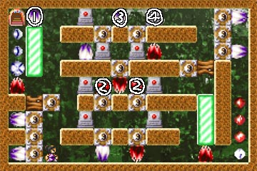
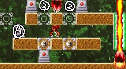
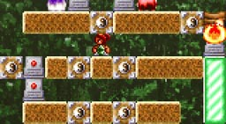
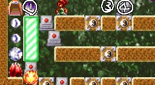
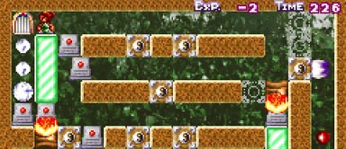

ついでに攻略です。
ムズイです。
|  | ２-１０ 黒 この部屋の目標は、"1"の位置にある、 |
攻略の流れ
 |
下から上に上がっていきます。 "A"の位置にオブジェクトを置き、 "2"の炎は、上斬りでブロックを消した後、 |
 |
上の段にあがります。 どのオブジェクトをどの位置に置くか、 |
|  | 図のように足場を組んでください。 その際"3"の位置の炎が邪魔になると思いますが、 あとは、"4"のオブジェクトで、 |
さて、クリアだけならこれでＯＫですが、
気になるのは扉下の３つの白経験値アイテムです。
さらにこの部屋には、敵に隠れていて見えませんが、
部屋の右下隅、右上隅、左下隅 の３ヶ所にも白経験値アイテムが存在します。
黒主人公の場合、扉下以外の白経験値アイテムをすべて取ってください。
さらに、残り時間が300をきるまで待ちます。
この時点で、経験値は -2 になっているはずです。
この状態では、扉は閉まってクリアすることはできなくなります。
|  | さあ、左に飛び降りましょう。 トータルではちょっとだけ得します。 |